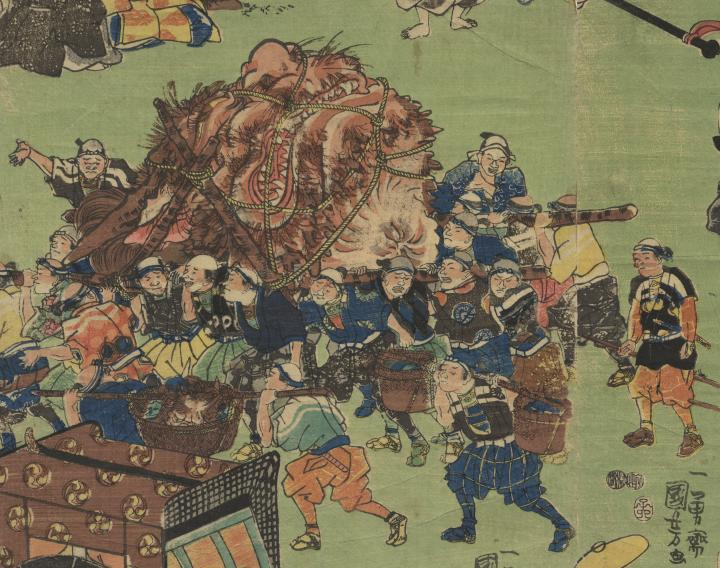

巨大な酒呑童子の首。柱に括りつけられ、大勢の男達に運ばれている。首は茶色の毛で覆われ、口には鋭い牙が見える。
著作者：一勇齋國芳／出典：親書誌：U426_nichibunken_0276：頼光大江山帰陣の圖 ；ライコウ オオエヤマ キジン ノ ズ／日付：2014／資源識別子：U426_nichibunken_0276_0001_0000
Copyright (c)2010- International Research Center for Japanese Studies, Kyoto, Japan. All rights reserved.